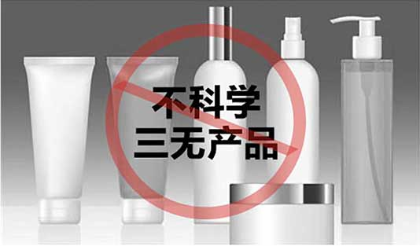
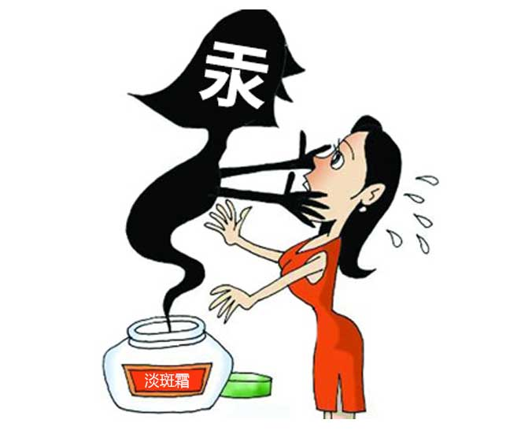
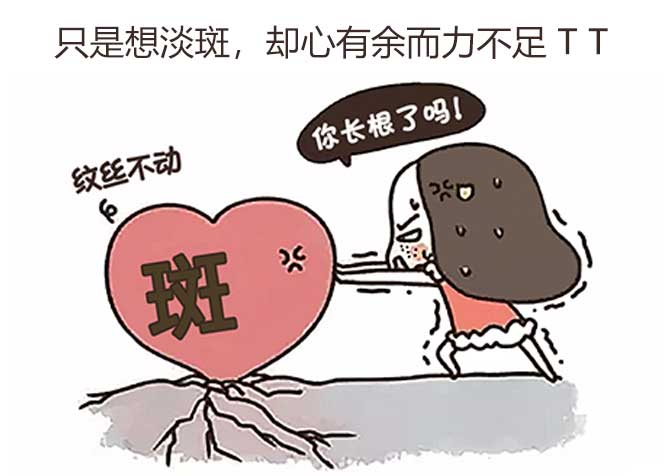
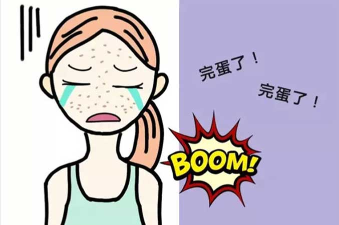

钱花出去了 却依然满面斑！！！
相信你也有过这样的经历，用了很多淡斑产品，却没有一点效果。去美容院深层淡斑，却越弄越多斑。
你研究过产品的成分是否合适你吗？你有可能一直在使用错误的方法，不科学成分的产品，这些只会加深对你脸部的伤害。
让我们先了解一下色斑是怎么形成的
1、色斑初期
色斑是由外界紫外线的照射、内分泌失调、遗传等因素的刺激导致细胞大量死亡和代谢紊乱，细胞内杂质无法代谢，造成色素沉积，新生细胞数量大量减少，从而初步形成色斑。

2、色斑中期
很多女性朋友认为，使用淡斑产品就会得到有效治疗，其实 淡斑需要从自己的皮肤肤质、色斑原因、色斑时间等等着 手，盲目使用淡斑产品易造成色斑的反弹，从而扩散色斑， 加深色斑颜色。
3、色斑后期
受损细胞越来越多时，黑色素会急剧增长，色斑也就越来越多，这时候再想治愈相对来说就用时较长。
重要提示
如果色斑初期没有妥善管理的话？毛孔里的黑素细胞会过量制造黑色素，形成局部暗沉！因此，发生这种情况的初期妥善管理是非常重要的。
